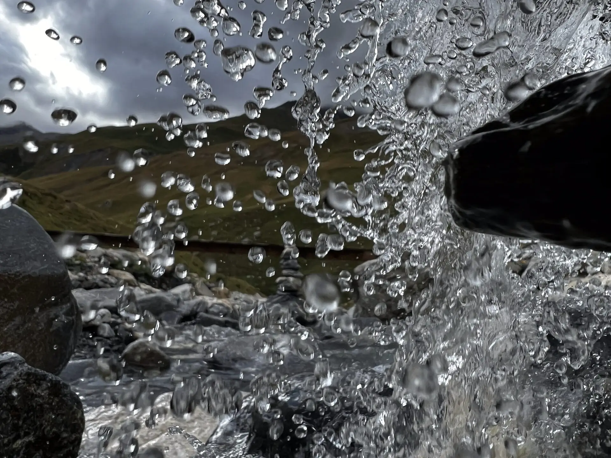

La Table
Une cuisine précise et généreuse, composée et préparée chez vous, accordée à vos goûts comme à vos objectifs.
Découvrir

Un service privé de mieux-être, pensé pour ceux qui exigent le meilleur
La table, le mouvement et le soin — réunis chez vous.
Chef · Entraînement · Massothérapie
En biologie, la synthase est l'enzyme qui assemble des éléments simples en quelque chose de plus grand. C'est mon métier : réunir la table, le mouvement et le soin en une seule discipline — la vôtre — sans que vous ayez à coordonner quoi que ce soit.
Les trois éléments
Chaque élément peut être retenu seul — mais c'est ensemble, composés d'après un même bilan et portés par une seule personne, qu'ils donnent leur pleine mesure.
Une cuisine précise et généreuse, composée et préparée chez vous, accordée à vos goûts comme à vos objectifs.
Découvrir
Un entraînement privé, conçu sur bilan et encadré chez vous, qui progresse à votre rythme — jamais celui d'un gym.
Découvrir
Une massothérapie thérapeutique qui dialogue avec vos entraînements : récupération, mobilité, relâchement profond.
DécouvrirL'approche
Une conversation confidentielle, chez vous ou à l'endroit de votre choix, pour dresser votre bilan : objectifs, condition physique, table.
Menus, séances et soins s'écrivent ensemble, d'après une seule partition — la vôtre — et non trois plans juxtaposés.
Je me déplace chez vous et j'ajuste chaque volet au fil de vos progrès — un seul interlocuteur, en toute discrétion.
Sur mesure, en nombre limité
La première rencontre est une conversation privée, sans engagement, pour composer votre synthèse.